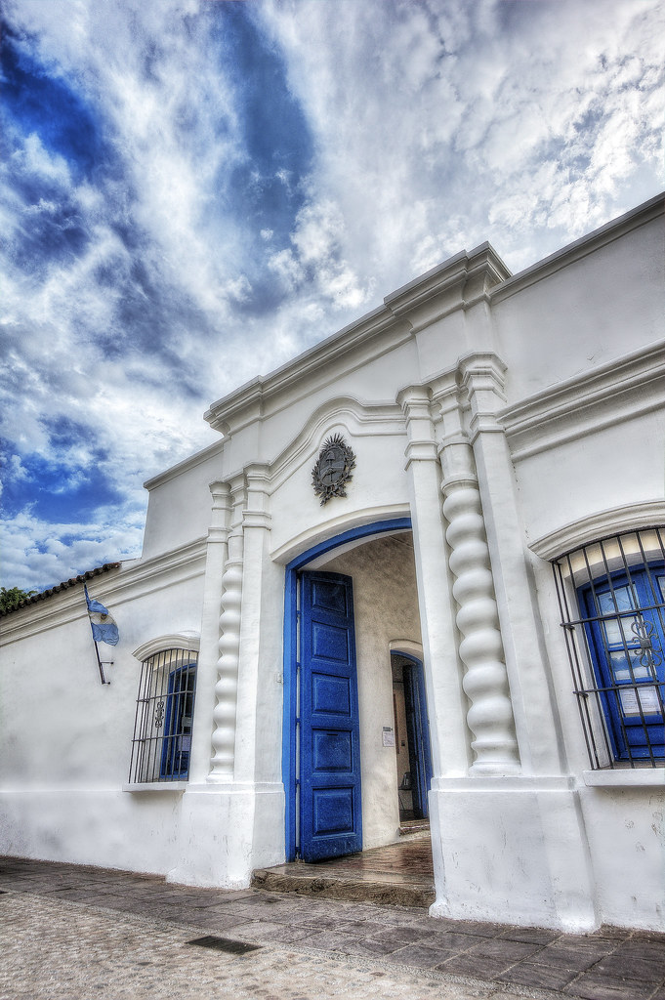
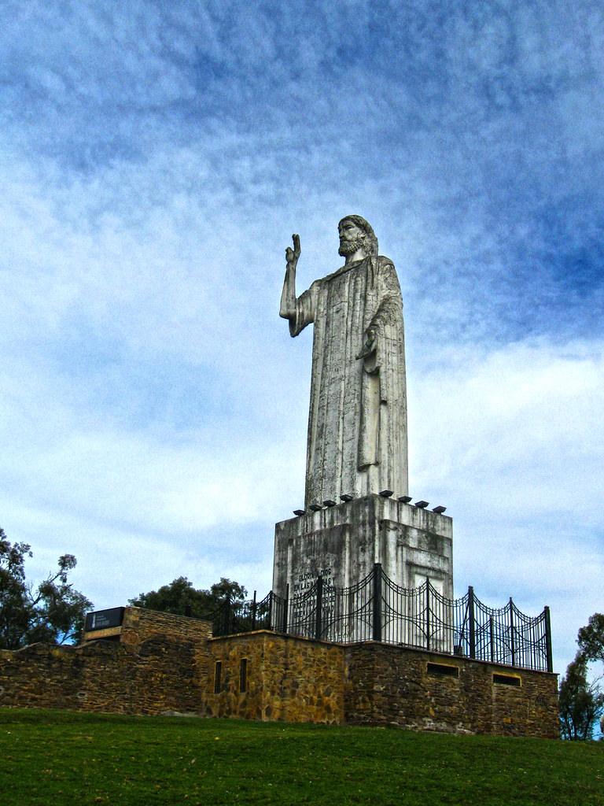

Hola a todos, soy Fabrizio, vivo en el municipio de Yerba Buena, Tucumán, esta es mi primera página Web. Me di cuenta que la programación web es bastante divertida en muchos aspectos y me está gustando bastante. Obviamente me quedan muchas cosas que aprender pero hasta ahora creo que he aprendido bien, estoy dispuesto a recibir cualquier tipo de opinión, crítica o sugerencia para poder mejorar.
Lugares turisticos para conocer en Tucuman
El Cristo Redentor de San Javir y la Casa Historica de Tucumanan, son puntos con bastante turismo en la provincia. La Casa Historica tuvo demasiada influencia en nuestra nacion ya que la sede del Congreso General que declaró la Independencia de las Provincias Unidas en Sudamérica el 9 de julio de 1816. Es el símbolo de la Independencia Nacional y por esta razón fue declarada Monumento Nacional. Por otro lado, la figura de Cristo significó un cambio en la fisonomía de la montaña y brindó una imagen de protección sobre toda la provincia, es por eso que es un gran atractivo turistico.
Casa Historica

Cristo Redentor
